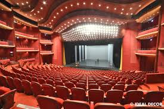
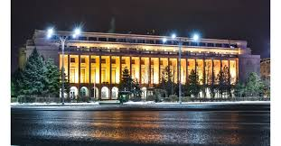
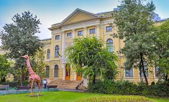

Bucuresti -> Obiective Turistice
Probabil ca Bucurestiul nu iti este cel mai strain oras; l-ai vazut de cateva ori pana acum, dar de fiecare data in fuga, intre doua vizite prestabilite sau intr-o scurta escala. Te-ai gandit vreodata ca l-ai putea vizita ca un turist adevarat, asa cum vizitezi orice oras din strainatate? Capitala are multe de oferit: un centru istoric care pastreaza inca patina timpului, cladiri istorice, bijuterii arhitecturale, biserici si cladiri-simbol, hanuri de poveste si multe spatii verzi in care sa te plimbi relaxat.
Cladirea-simbol a Bucurestiului, Palatul Parlamentului, este punctul de plecare in acest circuit. Daca te numeri printre norocosi si momentul vizitei tale in Capitala nu coincide cu un mare eveniment care sa atraga foarte multi turisti, atunci poti sa vizitezi cladirea fara sa pierzi prea mult timp. In caz contrar, multumeste-te sa vezi Palatul Parlamentului doar la exterior si consoleaza-te cu gandul ca o vei face gratis.
Indreapta-te apoi catre Bulevardul Unirii (sau zona “La Fantani”), construit in perioada comunista dupa marele cutremur din 1977. Noul bulevard al “micului Paris” a fost gandit sa detroneze celebrul Champs-Elysee al capitalei pariziene, avand o multime de fantani arteziene spectaculoase pe cei 3,5 km lungime. In zona Piata Unirii (pe partea dreapta venind dinspre Palatul Parlamentului) poti sa vizitezi Patriarhia Romana, situata pe Dealul Metropoliei, locul in care s-a semnat (la 1859) prima unificare a Principatelor Romane.
Daca nu, poti face stanga in Piata Unirii si sa te indrepti catre Centrul Istoric (sau Centrul Vechi ). Chiar la intrarea in centrul vechi vei descoperi celebrul Han al lui Manuc, un complex superb construit la inceputul secolului XIX, care pastreaza chiar si dupa renovare ceva din farmecul de odinioara. Nu mai este frecventat de negustorii si targovetii de altadata, dar chiar si asa te vei putea bucura de atmosfera si arhitectura deosebita a locului. Rezerva-ti ceva timp pentru o vizita mai indelungata la han, ca sa te poti rasfata cu bucate traditionale si ospata cum se cuvine, cu o cana de vin boieresc.
Dupa ce iesi pe poarta hanului, ia-o la stanga, caci la doi pasi se afla ruinele fostului Palat Voievodal, prima curte domneasca ce dateaza din vremea lui Mircea cel Batran. Lasa in urma istoria si plimba-te pe stradutele centrului vechi, impestritate cu cafenele si restaurante, terase inflorite si lume venita din multe colturi ale lumii. Dincolo de aceasta lume colorata, pe o strada veche(Smardan), se ascunde un superb lacas de cult, scapat ca prin minune de pofta nestavilita de demolare a comunistilor: Manastirea Stavropoleos. Nu te sfii si calca-i pragul, pentru ca vei descoperi o oaza de liniste si o bijuterie arhitecturala care te va lasa mut de uimire.
Apoi, la intersectia strazilor Smardan si Lipscani, iti va iesi in cale una dintre cele mai reprezentative si mai impunatoare cladiri ale Capitalei: Banca Nationala a Romaniei . Daca iti organizezi din timp vizita in Bucuresti, poti face rezervare (printr-un simplu email) pentru o vizita in interiorul cladirii, care este remarcabil.
De la Banca Nationala ai doua variante de continuare a traseului:
– una, mergand pe strada Lipscani pana pe Calea Victoriei, cea mai eleganta artera bucuresteana inca
din perioada interbelica (unde poti vizita Palatul CEC si Muzeul National de Istorie –
in partea stanga, sau Casa Capsa, Cercul Militar National, Palatul Telefoanelor, Palatul Regal, care
a apartinut Casei Regale in perioada 1881-1947 si Palatul Cantacuzino, care gazduieste Muzeul
National “George Enescu” – in partea dreapta);
– a doua, mergand pe strada Smardan pana pe bulevardul Regina Elisabeta, la Piata Universitatii. Nu
inainte insa de a arunca un ochi si prin Pasajul Macca-Villacrosse, care a fost sediul primei
burse de valori din Bucuresti.
Dinspre Piata Universitatii (flancata de Universitatea construita in 1864 de domnitorul Alexandru Ioan Cuza, de Teatrul National, renovat recent, Palatul Sutu si Spitalul Coltea), plimba-te pe Bulevardul Magheru pana spre Piata Romana; poti devia usor spre Gradina Icoanei, o zona intima si linistita a vechiului Bucuresti, in care vei gasi o alta cladire ce aminteste de trecut: Scoala Centrala.
Treci de Piata Romana si inainteaza catre Piata Victoriei, unde vei vedea cladirea Guvernului Romaniei, Muzeul National de Istorie Naturala “Grigore Antipa”, Muzeul Taranului Roman si Muzeul National de Geologie.
 Chiar daca circuitul ti se pare lung, trebuie sa stii ca nu poti parasi Bucurestiul fara o plimbare scurta prin Parcul Kiseleff sau una mai lunga, prin Parcul Herastrau (care sa culmineze cu o plimbare cu vaporasul pe Lacul Herastrau). La intrarea in parc se afla si Muzeul Satului “Dimitrie Gusti”, un alt obiectiv must-see din Bucuresti.